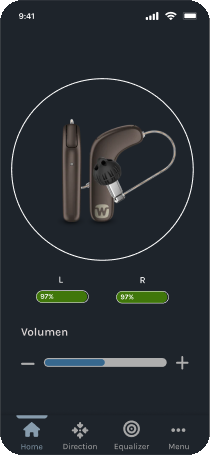
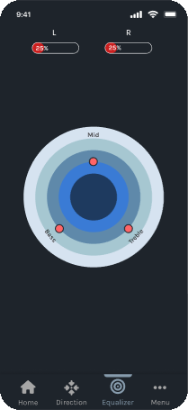
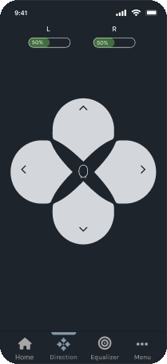
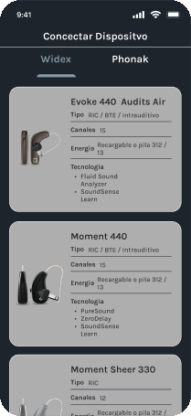
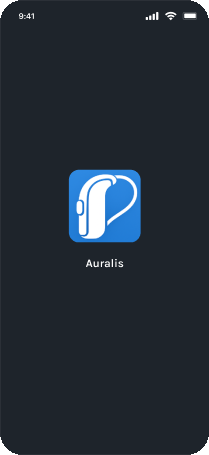
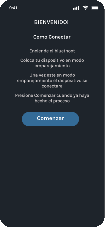
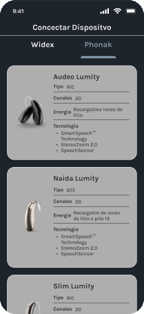
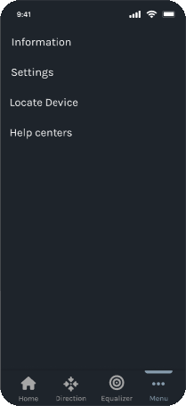
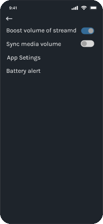
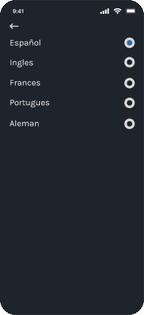

← Trabajo seleccionadoCaso de estudio · 01
Auralis
Una app para controlar audífonos y no quedarse sin batería en el momento menos oportuno.




¿Cómo saber con tiempo cuánto durará la batería?
El problema
Quienes usan dispositivos auditivos no saben con exactitud cuánto les durará la batería. Se apagan en medio del trabajo, el estudio o una conversación, y eso genera incomodidad y aislamiento.
Objetivo de diseño
Mostrar el estado de la batería de forma clara y anticipada, con alertas oportunas y controles simples para planificar la recarga o el cambio.
Encuestas y foros en línea
Escuchar antes de diseñar.
Opiniones divididas
Respuestas muy positivas, pero también preocupación por modelos costosos que no se ajustan a cada pérdida auditiva.
Lo que más molesta
La duración de la batería, los servicios profesionales y las limitaciones de la tecnología.
Lo que piden
Mejor conexión con el celular, voz más clara en ruido y más vida útil de la batería.
El proceso de diseño
De la persona a la pantalla.
01Mapa de empatía
Entender
Resumí qué dicen, piensan, hacen y sienten los usuarios. Aparece una y otra vez el miedo a quedarse sin batería en un momento importante.
Dicen
“No sé cuánto tiempo más me durará la batería.”
Piensan
“Ojalá hubiera una app que me avisara con tiempo.”
Hacen
Revisan el nivel todo el tiempo y llevan baterías de repuesto.
Temen
Quedarse sin audición en clase, en una reunión o en una cita médica.
Sienten
Ansiedad, frustración e inseguridad.
Desean
Autonomía, confianza y evitar interrupciones en su día.
02User persona
Definir
Jorge Hernández
34 años · arquitecto · Medellín
Casado, dos hijos
Problemática
Usa baterías desechables porque le dan seguridad, pero a veces marca 50 % y se apaga de golpe, dejándolo sin audición en momentos importantes.
Necesita
Control preciso de la batería, alertas claras y anticipadas, y un recordatorio para llevar repuestos.
03Arquitectura de información
Ordenar
Cuatro áreas desde el home. El nivel de batería está presente en las pantallas de control para que nunca se pierda de vista.
Dirección
Imagen, nivel de batería y avatar.
Home
Imagen, volumen y nivel de batería.
Ecualizador
Anillos para graves, medios y agudos.
Menú
Información, configuración e idioma, encontrar dispositivo y centros de atención.
04Journey map
Recorrer
Seis fases, del descubrimiento al soporte. En cada una, el punto de dolor se volvió una oportunidad de diseño.
- DescubrimientoApps complicadas → una interfaz sencilla
- Primer usoPoco control → control total de los parámetros
- Ajustes de sonidoNo entiende conversaciones → ecualizador y dirección
- PersonalizaciónInterfaz simple → personalizar para sentirla propia
- Uso diarioMucha navegación → un flujo simple y al grano
- SoportePoca confianza → más opciones de contacto
05Wireframes y alta fidelidad
Diseñar
Del boceto a las pantallas finales en Figma, con componentes reutilizables.
La solución
Información clara. Control sencillo.
Una interfaz oscura y sin ruido que pone el estado de cada audífono en el centro.
Batería a la vista
Porcentaje del audífono izquierdo y derecho en la pantalla principal, con color según el nivel.
Controles amplios
Volumen y dirección del sonido con botones grandes y fáciles de tocar.
Ecualizador visual
Anillos concéntricos para graves, medios y agudos en lugar de deslizadores pequeños.
De la conexión al ajuste fino.






Sistema de diseño
Oscuro, sobrio y reutilizable.
Paleta
Fondo
Superficie
Acento
Controles
Texto
Componentes
Tarjeta de dispositivoControl de direcciónIndicador de bateríaBotonesMenúSelector de idioma
User testing
Probar con personas antes de entregar.
Conectar
Que el usuario conecte el dispositivo de manera satisfactoria, sin ayuda.
Ajustar el volumen
Que lo suba o lo baje rápidamente desde la primera pantalla.
Cambiar el idioma
Que encuentre y confirme el cambio de idioma del sistema.
Siguiente
Volver a todos los proyectos →